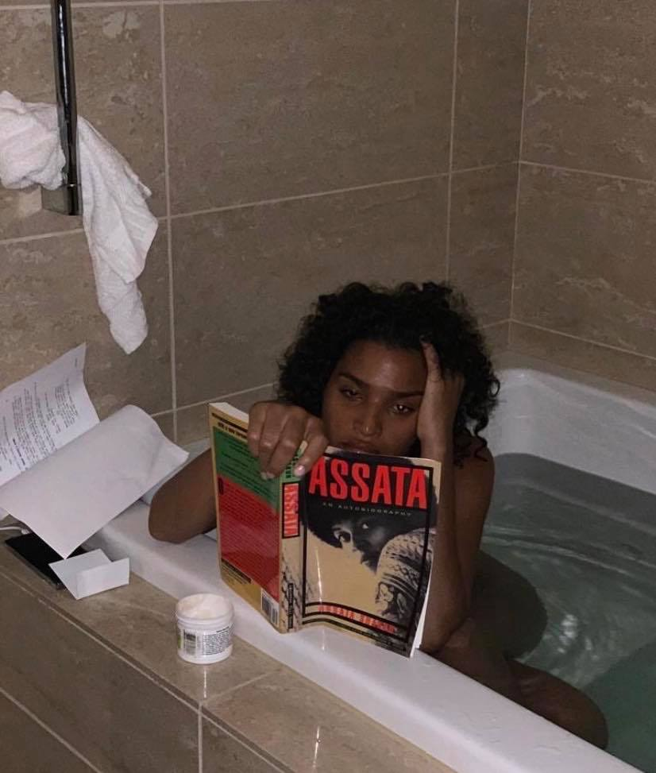

exploring queered images and imagination
by jason suh
for the alternative site, click here

(Source: @AlokVMenon on IG)
Image 1: Sitting at a table, laughing, from left to right: poet Alok Vaid-Menon, singer Sam Smith, stylist Donté McGuin, and designer Jeffrey Williams. I’ve followed Alok since they were a part of poetry duo Dark Matter, but they’ve since separated and Alok has pursued their own artistic/poetic/aesthetic work in New York. Sam Smith is a common singer-songwriter who recently came out as nonbinary. I was unfamiliar with Donté (@donte_mcguine) and Jeffrey (@jeffhova), but they are both pretty cool designers. It seems like a pretty tight-knit community as Alok is good friends with other trans fashionistas in NYC like Aaron Philip and Chella Man.
![A horizontal image taken with a professional camera with a bright off-white background. In the top right corner reads 'Gay Times 500.'In the center, a young dark-skinned Black woman sits in a glossy black Invacare Contour U wheelchair. She is wearing a yellow dress with a black floral pattern, and a yellow feather boa is wrapped around her neck. Her head is slightly tilted to her right and she extends her left hand bent at the wrist, exuding confidence. She wears a light blonde shoulder-length wig with curved bangs and has purple pink eyeshadow, a thick mascara, and dark pink lipstick on.](Aaron Philip.jpg)
(Source: @willyumbeck on IG)
Image 2: Transgender model Aaron Philip (IG @aaron___philip) poses for Gay Times’ 500th issue, celebrating the ‘the fluidity and connectivity of the people.’ I’ve been following her for about a year as I’ve found more queer & trans New Yorkers that are in the fashion industry.

(Source: @indyamoore on IG)
Image 3: Indrya Moore reads Assata: an autobiography by former Black Liberation Army member Assata Shakur in a bathtub. In the popular conscience, they’re most known for their role in Pose, an FX show from Ryan Murphy about ballroom culture that includes the largest trans cast ever. I know them as an active member of the NY community; they’re always showing up to actions and using their platform in positive ways, not just as a prominent trans person.
![A grainy but warm photo I took on my phone of a long-haired person in a striped shirt and black shorts who stands on a stage. The stage is lit by two ceiling lights above them. Behind them are a green couch and a light brown wooden bookshelf with many books that spans the length of the wall. There are at least four audience members facing the person intently, on the left-side sitting in individual chairs and on the right, on an orange couch that is as stiff to sit on as it looks. The person is holding a phone with two hands and are staring intently at it, mouth slightly ajar, and appear to be mid-sentence.](Moncho.jpg)
(Source: my iphone)
Image 4: My new friend Moncho Alvarado, a Poets' House 2018 Emerging Poets Fellow, performs a piece at the Asian American Writers’ Workshop in New York City. They identify as a Latinx-queer-poet, translator, visual artist, and educator & their work about diasporic identity moved me dearly.
(Source: my iphone)
Image 5: My voice comparison at 2 seconds, 2 weeks, 2 months, and 2 years of being on testosterone. I started making Youtube videos right around the time I started testosterone to document my medical and social transition. I recorded the last clip explicitly for this project though, because I stopped making videos at some point. I’ve definitely gotten feedback from folks that the content was helpful and I was very intentional about what I talked about and how I presented it, but at some point it got paralytic to think about how content I did produce/include also was a statement of everything it included. I guess that’s something I can learn from other people at TNS that identify more as being ~creators~.